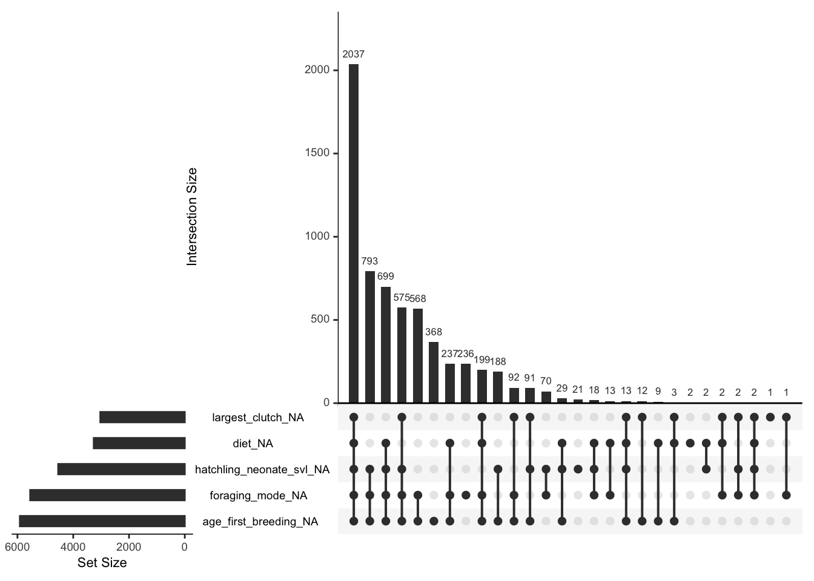
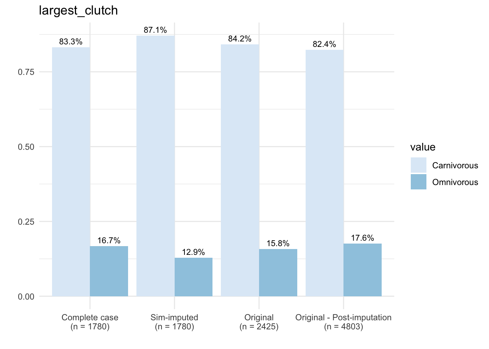

Note: it can help to make interim variables when you are trying to understand or debug code. One of the downsides of the tidyverse pipe!
# ggplot for missingness visualization
ggplot(dfMissing) +
# Barplot ordered by missingness
# reorder function from R documentation: "The "default" method treats its first argument as a categorical variable, and reorders its levels based on the values of a second variable, usually numeric."
geom_bar(aes(x = reorder(trait, desc(pct_missing)), y = pct_missing),
stat = 'identity', fill = "seagreen", width = 0.7) +
coord_flip() +
labs(title = "Percentage of Missing Values by Trait", x = 'Trait', y = "% of Missing Values") +
theme_minimal(base_size = 12) 

# Clustering by missingness may help you see patterns
naniar::vis_miss(dfTraits[traits], cluster = T, sort_miss = T)

# Here's the kicker! How many species do we lose if we use complete case observations?
dfCompleteCase <- na.omit(dfTraits)
cat("We lose", nrow(dfTraits) - nrow(dfCompleteCase), "species!")## We lose 6283 species!Imputation prep. —-
# Only some traits are amenable to imputation and we need to do some more preprocessing before we impute our values.
names(dfTraits)## [1] "family" "genus"
## [3] "species" "latitude"
## [5] "insular_endemic" "maximum_svl"
## [7] "hatchling_neonate_svl" "activity_time"
## [9] "diet" "foraging_mode"
## [11] "reproductive_mode" "largest_clutch"
## [13] "age_first_breeding" "iucn_redlist_assessment"# Set row names as species so we have a form of ID.
rownames(dfTraits) <- dfTraits$species
# Imputing traits with high proportions of missingness could be problematic. Based on our visualizations, let's set a threshold of 60% missingness as our cutoff.
# Note: this is an arbitrary threshold I am using right now. In reality, this is something you could perform sensitivity analyses on. There is no "right" answer for how much missingness is too much. It's a combination of many factors (e.g., sample size, strength of relationships between variables, missingness mechanism, etc.). So you probably don't want to impute a variable with only a few observations and 90% missingness, for example.
dfFiltered <- dfTraits %>%
select(-c(all_of(taxCols), ## leave out taxonomy also for imputation purposes
age_first_breeding, foraging_mode, hatchling_neonate_svl)) ## traits with most amount of missingness))
# Update our trait vectors.
catTraits <- catTraits[!catTraits %in% "foraging_mode"]
contTraits <- contTraits[!contTraits %in% c("age_first_breeding", "hatchling_neonate_svl")]
traits <- c(catTraits, contTraits)
# Visualize the missingness of our subset. This also gives you an idea of which combination of traits would give you the largest complete-case dataset.
naniar::vis_miss(dfFiltered, cluster = T, sort_miss = T)
# Imputation methods can be sensitive to class imbalance issues, as some categories may be over or underrepresented.
# Let's check our categorical traits for severe class imbalances or lack of variation or just for categories we should fix in general.
lapply(dfFiltered[catTraits], table)## $insular_endemic
##
## no unknown yes
## 4610 1 2001
##
## $activity_time
##
## Cathemeral Diurnal Nocturnal
## 267 3570 1243
##
## $diet
##
## Carnivorous Herbivorous Omnivorous
## 2681 157 509
##
## $reproductive_mode
##
## Mixed Oviparous unclear Viviparous
## 20 3304 11 707
##
## $iucn_redlist_assessment
##
## CR DD EN LC LR/lc LR/nt NE NT VU
## 139 451 322 2148 4 8 3009 253 278# Look at diet. "Herbivorous" is a minor category. We check if this category makes up more than 10% of the observed data.
sum(dfFiltered$diet == "Herbivorous", na.rm = T)/sum(dfFiltered$diet != "Herbivorous", na.rm = T)## [1] 0.0492163# Consider removing rare categories (those less than 10% of the data, for example). You could use a different threshold for your data if you had a large enough sample size.
# Let's remove the rare categories:
dfFiltered <- dfFiltered %>%
filter(diet != "Herbivorous" | is.na(diet),
activity_time != "Cathemeral" | is.na(activity_time),
insular_endemic != "unknown" | is.na(insular_endemic),
reproductive_mode == "Oviparous" | reproductive_mode == "Viviparous" | is.na(reproductive_mode),
iucn_redlist_assessment == "LC" | iucn_redlist_assessment == "NE" | is.na(iucn_redlist_assessment)
) ## need to specify that we are keeping NAs because filter will remove them!
# Check distributions of numerical traits once more.
lapply(dfFiltered[contTraits], hist)


## $latitude
## $breaks
## [1] -60 -50 -40 -30 -20 -10 0 10 20 30 40 50 60
##
## $counts
## [1] 3 73 257 678 663 631 771 846 505 282 75 3
##
## $density
## [1] 6.266973e-05 1.524963e-03 5.368707e-03 1.416336e-02 1.385001e-02
## [6] 1.318153e-02 1.610612e-02 1.767286e-02 1.054940e-02 5.890955e-03
## [11] 1.566743e-03 6.266973e-05
##
## $mids
## [1] -55 -45 -35 -25 -15 -5 5 15 25 35 45 55
##
## $xname
## [1] "X[[i]]"
##
## $equidist
## [1] TRUE
##
## attr(,"class")
## [1] "histogram"
##
## $maximum_svl
## $breaks
## [1] 0 100 200 300 400 500 600 700 800 900 1000 1100 1200
##
## $counts
## [1] 3540 997 140 50 17 23 5 7 3 2 0 1
##
## $density
## [1] 7.398119e-03 2.083595e-03 2.925810e-04 1.044932e-04 3.552769e-05
## [6] 4.806688e-05 1.044932e-05 1.462905e-05 6.269592e-06 4.179728e-06
## [11] 0.000000e+00 2.089864e-06
##
## $mids
## [1] 50 150 250 350 450 550 650 750 850 950 1050 1150
##
## $xname
## [1] "X[[i]]"
##
## $equidist
## [1] TRUE
##
## attr(,"class")
## [1] "histogram"
##
## $largest_clutch
## $breaks
## [1] 0 10 20 30 40 50 60 70 80 90 100
##
## $counts
## [1] 2315 209 42 18 8 8 5 1 0 2
##
## $density
## [1] 8.876534e-02 8.013804e-03 1.610429e-03 6.901840e-04 3.067485e-04
## [6] 3.067485e-04 1.917178e-04 3.834356e-05 0.000000e+00 7.668712e-05
##
## $mids
## [1] 5 15 25 35 45 55 65 75 85 95
##
## $xname
## [1] "X[[i]]"
##
## $equidist
## [1] TRUE
##
## attr(,"class")
## [1] "histogram"# Finally, let's ensure we have the correct data classes.
dfFiltered[contTraits] <- lapply(dfFiltered[contTraits], as.numeric)
# Factor is the class required for imputation of categorical traits. It is also the data class required for categorical variables in many statistical analyses.
dfFiltered[catTraits] <- lapply(dfFiltered[catTraits], as.factor)Missingness simulation. —-
# The first thing we are going to do is make a complete-case dataset.
dfCompleteCase <- na.omit(dfFiltered)
# We are going to log-transform our skewed numerical traits to make the distributions approximately normal. This can help with certain types of imputation methods, but isn't always necessary.
dfLog <- dfCompleteCase ## making a copy of the complete-case dataframe
dfLog[c("maximum_svl", "largest_clutch")] <- lapply(dfLog[c("maximum_svl", "largest_clutch")], log)
# Now, set the seed so you can reproduce your results. This is VERY important!
set.seed(123)
# To simulate missingness, let's introduce some NAs into the dataset using the prodNA function. Any data introduced using this function is missing completely at random (MCAR). If you are interested in simulated MAR or MNAR data, check out the mice::ampute function.
?prodNA
# noNA = the proportion of missingness we want to introduce
dfMissing <- prodNA(dfLog, noNA = 0.1)
# Let's make sure it worked.
sum(is.na(dfMissing))/prod(dim(dfMissing))## [1] 0.1Mean/mode imputation. —-
# Mean/mode is the simplest imputation method and it is pretty easy to do. It's a good baseline to compare other methods to.
# Make a copy of dfMissing.
dfMeanModeImp <- dfMissing
# Impute traits with mean for numerical traits and mode for categorical traits.
# Mean value
mean(dfMeanModeImp$latitude, na.rm = T)## [1] 0.06018001##
## Diurnal Nocturnal
## 1271 338## Diurnal
## 1## [1] "Diurnal"# Use a for loop!:
for(t in 1:length(traits)) {
# Take the name of the tth trait.
trait <- traits[[t]]
# Identify missing values in the trait.
index <- which(is.na(dfMeanModeImp[trait]))
# If trait is numeric..
if(trait %in% contTraits){
# Replace all NA values with the mean of the known observations for the variable.
dfMeanModeImp[index, trait] <- mean(dfMeanModeImp[[trait]], na.rm = T)
} else if(trait %in% catTraits){
# Replace all NA values with the mode of the known observations for the variable.
dfMeanModeImp[index, trait] <- names(which.max(table(dfMeanModeImp[[trait]])))
}
}
# Back-transform the log-transformed data because we will need to compare it to the original data to get our error rates.
dfMeanModeImp[c("maximum_svl", "largest_clutch")] <- lapply(dfMeanModeImp[c("maximum_svl", "largest_clutch")], exp)K-Nearest Neighbour Imputation —-
# Let's try using KNN (K-Nearest Neighbour Imputation). Using a distance matrix, determines k neighbours that are closest to the observation with missing values. It then uses the information from the nearest neighbours to fill in the missing values.
?kNN
# data = dataframe with missing values, k = number of nearest neighbours used. Rule of thumb for k is to take the square root of n (sample size). This might be a parameter you want to tune, however.
neighbours <- round(sqrt(nrow(dfMissing)))
dfKNN <- kNN(data = dfMissing, k = neighbours)
view(dfKNN) ## This is nice because it lets you track your imputed values.
# Subset to only take the imputed values and not the indicator columns.
dfKNN <- dfKNN[, -grep(pattern = "_imp", x = names(dfKNN))]
# Back-transform the log-transformed data.
dfKNN[c("maximum_svl", "largest_clutch")] <- lapply(dfKNN[c("maximum_svl", "largest_clutch")], exp)Random forest imputation —-
# Builds a Random Forest model using the observed data to estimate those values that are missing. It is an iterative process that repeats until the imputed values stabilize.
?missForest
# xmix = dataframe with missing values, maxiter = max # of iterations performed, ntree = number of trees in the forest
RFresult <- missForest(xmis = dfMissing, maxiter = 10, ntree = 100)
# Look at the imputed dataframe.
view(RFresult$ximp)
class(RFresult$ximp)## [1] "data.frame"MICE. —-
# MICE is a framework for performing multiple imputation. Single imputation is performed several times, so it can provides a measure of uncertainty for your imputed values
?mice
# Default methods for numeric and categorical traits are predictive mean matching and logistic regression, respectively. But you can try different methods and see which works best for your data.
sapply(dfMissing, class)## latitude insular_endemic maximum_svl
## "numeric" "factor" "numeric"
## activity_time diet reproductive_mode
## "factor" "factor" "factor"
## largest_clutch iucn_redlist_assessment
## "numeric" "factor"myMethods <- c("norm.predict", "cart", "pmm", "logreg", "logreg", "cart", "pmm", "cart")
# data = dataframe with missing values, m = number of multiple imputations.
miceMids <- mice(data = dfMissing, method = myMethods, m = 10)##
## iter imp variable
## 1 1 latitude insular_endemic maximum_svl activity_time diet reproductive_mode largest_clutch iucn_redlist_assessment
## 1 2 latitude insular_endemic maximum_svl activity_time diet reproductive_mode largest_clutch iucn_redlist_assessment
## 1 3 latitude insular_endemic maximum_svl activity_time diet reproductive_mode largest_clutch iucn_redlist_assessment
## 1 4 latitude insular_endemic maximum_svl activity_time diet reproductive_mode largest_clutch iucn_redlist_assessment
## 1 5 latitude insular_endemic maximum_svl activity_time diet reproductive_mode largest_clutch iucn_redlist_assessment
## 1 6 latitude insular_endemic maximum_svl activity_time diet reproductive_mode largest_clutch iucn_redlist_assessment
## 1 7 latitude insular_endemic maximum_svl activity_time diet reproductive_mode largest_clutch iucn_redlist_assessment
## 1 8 latitude insular_endemic maximum_svl activity_time diet reproductive_mode largest_clutch iucn_redlist_assessment
## 1 9 latitude insular_endemic maximum_svl activity_time diet reproductive_mode largest_clutch iucn_redlist_assessment
## 1 10 latitude insular_endemic maximum_svl activity_time diet reproductive_mode largest_clutch iucn_redlist_assessment
## 2 1 latitude insular_endemic maximum_svl activity_time diet reproductive_mode largest_clutch iucn_redlist_assessment
## 2 2 latitude insular_endemic maximum_svl activity_time diet reproductive_mode largest_clutch iucn_redlist_assessment
## 2 3 latitude insular_endemic maximum_svl activity_time diet reproductive_mode largest_clutch iucn_redlist_assessment
## 2 4 latitude insular_endemic maximum_svl activity_time diet reproductive_mode largest_clutch iucn_redlist_assessment
## 2 5 latitude insular_endemic maximum_svl activity_time diet reproductive_mode largest_clutch iucn_redlist_assessment
## 2 6 latitude insular_endemic maximum_svl activity_time diet reproductive_mode largest_clutch iucn_redlist_assessment
## 2 7 latitude insular_endemic maximum_svl activity_time diet reproductive_mode largest_clutch iucn_redlist_assessment
## 2 8 latitude insular_endemic maximum_svl activity_time diet reproductive_mode largest_clutch iucn_redlist_assessment
## 2 9 latitude insular_endemic maximum_svl activity_time diet reproductive_mode largest_clutch iucn_redlist_assessment
## 2 10 latitude insular_endemic maximum_svl activity_time diet reproductive_mode largest_clutch iucn_redlist_assessment
## 3 1 latitude insular_endemic maximum_svl activity_time diet reproductive_mode largest_clutch iucn_redlist_assessment
## 3 2 latitude insular_endemic maximum_svl activity_time diet reproductive_mode largest_clutch iucn_redlist_assessment
## 3 3 latitude insular_endemic maximum_svl activity_time diet reproductive_mode largest_clutch iucn_redlist_assessment
## 3 4 latitude insular_endemic maximum_svl activity_time diet reproductive_mode largest_clutch iucn_redlist_assessment
## 3 5 latitude insular_endemic maximum_svl activity_time diet reproductive_mode largest_clutch iucn_redlist_assessment
## 3 6 latitude insular_endemic maximum_svl activity_time diet reproductive_mode largest_clutch iucn_redlist_assessment
## 3 7 latitude insular_endemic maximum_svl activity_time diet reproductive_mode largest_clutch iucn_redlist_assessment
## 3 8 latitude insular_endemic maximum_svl activity_time diet reproductive_mode largest_clutch iucn_redlist_assessment
## 3 9 latitude insular_endemic maximum_svl activity_time diet reproductive_mode largest_clutch iucn_redlist_assessment
## 3 10 latitude insular_endemic maximum_svl activity_time diet reproductive_mode largest_clutch iucn_redlist_assessment
## 4 1 latitude insular_endemic maximum_svl activity_time diet reproductive_mode largest_clutch iucn_redlist_assessment
## 4 2 latitude insular_endemic maximum_svl activity_time diet reproductive_mode largest_clutch iucn_redlist_assessment
## 4 3 latitude insular_endemic maximum_svl activity_time diet reproductive_mode largest_clutch iucn_redlist_assessment
## 4 4 latitude insular_endemic maximum_svl activity_time diet reproductive_mode largest_clutch iucn_redlist_assessment
## 4 5 latitude insular_endemic maximum_svl activity_time diet reproductive_mode largest_clutch iucn_redlist_assessment
## 4 6 latitude insular_endemic maximum_svl activity_time diet reproductive_mode largest_clutch iucn_redlist_assessment
## 4 7 latitude insular_endemic maximum_svl activity_time diet reproductive_mode largest_clutch iucn_redlist_assessment
## 4 8 latitude insular_endemic maximum_svl activity_time diet reproductive_mode largest_clutch iucn_redlist_assessment
## 4 9 latitude insular_endemic maximum_svl activity_time diet reproductive_mode largest_clutch iucn_redlist_assessment
## 4 10 latitude insular_endemic maximum_svl activity_time diet reproductive_mode largest_clutch iucn_redlist_assessment
## 5 1 latitude insular_endemic maximum_svl activity_time diet reproductive_mode largest_clutch iucn_redlist_assessment
## 5 2 latitude insular_endemic maximum_svl activity_time diet reproductive_mode largest_clutch iucn_redlist_assessment
## 5 3 latitude insular_endemic maximum_svl activity_time diet reproductive_mode largest_clutch iucn_redlist_assessment
## 5 4 latitude insular_endemic maximum_svl activity_time diet reproductive_mode largest_clutch iucn_redlist_assessment
## 5 5 latitude insular_endemic maximum_svl activity_time diet reproductive_mode largest_clutch iucn_redlist_assessment
## 5 6 latitude insular_endemic maximum_svl activity_time diet reproductive_mode largest_clutch iucn_redlist_assessment
## 5 7 latitude insular_endemic maximum_svl activity_time diet reproductive_mode largest_clutch iucn_redlist_assessment
## 5 8 latitude insular_endemic maximum_svl activity_time diet reproductive_mode largest_clutch iucn_redlist_assessment
## 5 9 latitude insular_endemic maximum_svl activity_time diet reproductive_mode largest_clutch iucn_redlist_assessment
## 5 10 latitude insular_endemic maximum_svl activity_time diet reproductive_mode largest_clutch iucn_redlist_assessment## [1] "mids"# mids is a special object that contains multiple imputed datasets.
?mids
# Number of imputed datasets
miceMids$m## [1] 10## latitude insular_endemic maximum_svl activity_time diet
## latitude 0 1 1 1 1
## insular_endemic 1 0 1 1 1
## maximum_svl 1 1 0 1 1
## activity_time 1 1 1 0 1
## diet 1 1 1 1 0
## reproductive_mode 1 1 1 1 1
## largest_clutch 1 1 1 1 1
## iucn_redlist_assessment 1 1 1 1 1
## reproductive_mode largest_clutch
## latitude 1 1
## insular_endemic 1 1
## maximum_svl 1 1
## activity_time 1 1
## diet 1 1
## reproductive_mode 0 1
## largest_clutch 1 0
## iucn_redlist_assessment 1 1
## iucn_redlist_assessment
## latitude 1
## insular_endemic 1
## maximum_svl 1
## activity_time 1
## diet 1
## reproductive_mode 1
## largest_clutch 1
## iucn_redlist_assessment 0# View imputed data.
view(miceMids$imp$maximum_svl) ## This contains the imputed values for each of the 5 datasets.
view(miceMids$imp$insular_endemic)
# If you are running a statistical analysis on data imputed using MICE, you will have to apply it to EACH of the imputed datasets. For example:
# Fitting a linear regression to the multiply imputed datasets using the with() function.
fit <- with(miceMids, lm(maximum_svl ~ latitude + insular_endemic))
# What class is it?
class(fit) ## special class called "mira" that contained results of analyses repeated across MI datasets## [1] "mira"## call :
## with.mids(data = miceMids, expr = lm(maximum_svl ~ latitude +
## insular_endemic))
##
## call1 :
## mice(data = dfMissing, m = 10, method = myMethods)
##
## nmis :
## [1] 169 185 194 171 187 186 165 167
##
## analyses :
## [[1]]
##
## Call:
## lm(formula = maximum_svl ~ latitude + insular_endemic)
##
## Coefficients:
## (Intercept) latitude insular_endemicyes
## 4.465e+00 -3.141e-05 1.061e-03
##
##
## [[2]]
##
## Call:
## lm(formula = maximum_svl ~ latitude + insular_endemic)
##
## Coefficients:
## (Intercept) latitude insular_endemicyes
## 4.468e+00 5.258e-05 -4.513e-03
##
##
## [[3]]
##
## Call:
## lm(formula = maximum_svl ~ latitude + insular_endemic)
##
## Coefficients:
## (Intercept) latitude insular_endemicyes
## 4.4669414 -0.0002638 -0.0028137
##
##
## [[4]]
##
## Call:
## lm(formula = maximum_svl ~ latitude + insular_endemic)
##
## Coefficients:
## (Intercept) latitude insular_endemicyes
## 4.475e+00 2.564e-08 -1.438e-02
##
##
## [[5]]
##
## Call:
## lm(formula = maximum_svl ~ latitude + insular_endemic)
##
## Coefficients:
## (Intercept) latitude insular_endemicyes
## 4.466e+00 2.001e-05 -1.013e-02
##
##
## [[6]]
##
## Call:
## lm(formula = maximum_svl ~ latitude + insular_endemic)
##
## Coefficients:
## (Intercept) latitude insular_endemicyes
## 4.4705728 -0.0001386 -0.0062157
##
##
## [[7]]
##
## Call:
## lm(formula = maximum_svl ~ latitude + insular_endemic)
##
## Coefficients:
## (Intercept) latitude insular_endemicyes
## 4.471273 -0.000274 0.002231
##
##
## [[8]]
##
## Call:
## lm(formula = maximum_svl ~ latitude + insular_endemic)
##
## Coefficients:
## (Intercept) latitude insular_endemicyes
## 4.4668600 -0.0001707 -0.0019305
##
##
## [[9]]
##
## Call:
## lm(formula = maximum_svl ~ latitude + insular_endemic)
##
## Coefficients:
## (Intercept) latitude insular_endemicyes
## 4.471e+00 -4.724e-05 -7.133e-03
##
##
## [[10]]
##
## Call:
## lm(formula = maximum_svl ~ latitude + insular_endemic)
##
## Coefficients:
## (Intercept) latitude insular_endemicyes
## 4.474e+00 5.694e-05 -1.976e-02# Let's pool the results together using the pool function.
# From the mice documentation: "The pool() function combines the estimates from m repeated complete data analyses."
pool.fit <- pool(fit)
summary(pool.fit)## term estimate std.error statistic df p.value
## 1 (Intercept) 4.469515e+00 0.0144972337 308.3012204 1000.691 0.0000000
## 2 latitude -7.961913e-05 0.0005610285 -0.1419164 1086.460 0.8871724
## 3 insular_endemicyes -6.357860e-03 0.0312562266 -0.2034110 1103.494 0.8388513?pool ## if you are interested in how the pooling is performed
# Get a list of the imputed dataframes using the mice::complete() function. Since we specified "all", it will return us a list containing all of the imputed dataframes. Should be length "m".
l_dfMICE <- mice::complete(miceMids, "all")
view(l_dfMICE[[1]])
# Back-transform all the imputed values in this list.
l_dfMICE <- lapply(l_dfMICE, function(x){
x[c("maximum_svl", "largest_clutch")] <- lapply(x[c("maximum_svl", "largest_clutch")], exp)
return(x)
})Error rates. —-
# Let's see how well the different imputation methods predicted the values.
# First back-transform dfMissing for comparison purposes
dfMissing[c("maximum_svl", "largest_clutch")] <- lapply(dfMissing[c("maximum_svl", "largest_clutch")], exp)
# We can use did the missForest::mixError() function for obtaining error rates.
# mixError is a useful function because it tracks which values were imputed for you, as long as you can provide it with the original and missing dataframes.
missForest::mixError(ximp = dfMeanModeImp, xmis = dfMissing, xtrue = dfCompleteCase)## NRMSE PFC
## 0.7478356 0.2332589# NRMSE refers to the normalized root mean squared error for the numeric data and PFC refers to the proportion of falsely classified entries for the categorical variables. For both, lower is better.
# If we wanted the error for one variable?
missForest::mixError(ximp = dfMeanModeImp["maximum_svl"], xmis = dfMissing["maximum_svl"], xtrue = dfCompleteCase["maximum_svl"]) ## Remember it wants a dataframe as input!## NRMSE
## 1.013817## NRMSE PFC
## 0.7023635 0.2064732# A bit better than mean/mode.
# How about missForest?
missForest::mixError(ximp = dfRF, xmis = dfMissing, xtrue = dfCompleteCase)## NRMSE PFC
## 0.6684458 0.2276786# Better on the numerical traits but worse on categorical compared to KNN.
# What if we wanted to get the errors for the MICE datasets?
# Apply the mixError function across the imputed dataframes.
l_MICEerrors <- lapply(l_dfMICE, function(x) mixError(ximp = x, xmis = dfMissing, xtrue = dfCompleteCase))
# Let's average the errors using the Reduce() function, which can used to apply a function over a list and then return a single result. Here, we are adding the elements of l_Errors and dividing them by the length of l_Errors.
Reduce("+", l_MICEerrors)/length(l_MICEerrors) ## probably need to pick better methods ## NRMSE PFC
## 0.8791144 0.2703125Impute the full dataset. —-
# From here, choose the best-performing method on the complete-case data and use it to impute your target dataset.
# Ideally, it would be the method that resulted in the lowest error rate for the majority of variables.
imputeRes <- missForest(xmis = dfFiltered) ## may take a while
# Extract imputed dataset.
dfImputed <- imputeRes$ximp
# Combine dataframes into list.
l_dfAll <- list(dfCompleteCase, dfRF, dfFiltered, dfImputed)
# Name the list according to dataframe.
names(l_dfAll) <- c("CC", "SIM", "O", "IMP")
# We need to make some alterations for plotting.
for(i in 1:length(l_dfAll)){
# Get name of dataframe.
ID <- names(l_dfAll)[[i]]
# Add ID to column names of dataframe so we can identify which dataframe it came from.
names(l_dfAll[[i]]) <- paste(ID, colnames(l_dfAll[[i]]), sep = "_")
# Add species col so we can merge them together.
l_dfAll[[i]]$species <- rownames(l_dfAll[[i]])
}
view(l_dfAll[[1]])
# Merge all the dataframes by species.
dfAll <- Reduce(function(...) merge(..., by = "species", all = T), l_dfAll)
names(dfAll)## [1] "species" "CC_latitude"
## [3] "CC_insular_endemic" "CC_maximum_svl"
## [5] "CC_activity_time" "CC_diet"
## [7] "CC_reproductive_mode" "CC_largest_clutch"
## [9] "CC_iucn_redlist_assessment" "SIM_latitude"
## [11] "SIM_insular_endemic" "SIM_maximum_svl"
## [13] "SIM_activity_time" "SIM_diet"
## [15] "SIM_reproductive_mode" "SIM_largest_clutch"
## [17] "SIM_iucn_redlist_assessment" "O_latitude"
## [19] "O_insular_endemic" "O_maximum_svl"
## [21] "O_activity_time" "O_diet"
## [23] "O_reproductive_mode" "O_largest_clutch"
## [25] "O_iucn_redlist_assessment" "IMP_latitude"
## [27] "IMP_insular_endemic" "IMP_maximum_svl"
## [29] "IMP_activity_time" "IMP_diet"
## [31] "IMP_reproductive_mode" "IMP_largest_clutch"
## [33] "IMP_iucn_redlist_assessment"# From here, we can make plots pretty easily.
dfSubset <- select(dfAll, c(CC_largest_clutch, SIM_largest_clutch,
O_largest_clutch, IMP_largest_clutch))
# Log transform data for better visualization.
dfSubset <- as.data.frame(lapply(dfSubset, log)) ## sometimes dataframe format is easier to deal
# Get sample size counts for each column.
sampleSizes <- sapply(dfSubset, function(x) sum(!is.na(x)))
sampleSizes## CC_largest_clutch SIM_largest_clutch O_largest_clutch IMP_largest_clutch
## 1780 1780 2608 4803# Pivot dataframe to long form so we can more easily plot variables by group.
dfPivot <- pivot_longer(dfSubset, cols = colnames(dfSubset))
view(dfPivot)
# Convert to factor.
dfPivot$name <- as.factor(dfPivot$name)
# X-axis label containing sample size information.
dataType <- c("Complete case", "Sim-imputed", "Original", "Original - Post-imputation")
# Paste sample size onto dataType vector.
xlabel <- paste(dataType, "\n", "(n = ", sampleSizes, ")" , sep = "")
# GGplot comparing trait distributions
ggplot(dfPivot, aes(x = name, y = value, fill = name)) +
geom_boxplot() +
labs(title = trait, y = "", x = "") +
scale_x_discrete(labels = xlabel) +
scale_fill_brewer(palette = "Set3") +
theme_minimal(base_size = 12) + # Base font size
theme(legend.position = "none") +
theme(axis.text = element_text(size = 10, face = "bold"))
## [1] "species" "CC_latitude"
## [3] "CC_insular_endemic" "CC_maximum_svl"
## [5] "CC_activity_time" "CC_diet"
## [7] "CC_reproductive_mode" "CC_largest_clutch"
## [9] "CC_iucn_redlist_assessment" "SIM_latitude"
## [11] "SIM_insular_endemic" "SIM_maximum_svl"
## [13] "SIM_activity_time" "SIM_diet"
## [15] "SIM_reproductive_mode" "SIM_largest_clutch"
## [17] "SIM_iucn_redlist_assessment" "O_latitude"
## [19] "O_insular_endemic" "O_maximum_svl"
## [21] "O_activity_time" "O_diet"
## [23] "O_reproductive_mode" "O_largest_clutch"
## [25] "O_iucn_redlist_assessment" "IMP_latitude"
## [27] "IMP_insular_endemic" "IMP_maximum_svl"
## [29] "IMP_activity_time" "IMP_diet"
## [31] "IMP_reproductive_mode" "IMP_largest_clutch"
## [33] "IMP_iucn_redlist_assessment"# Same steps as above.
dfSubset <- select(dfAll, c(CC_diet, SIM_diet,
O_diet, IMP_diet))
sampleSizes <- sapply(dfSubset, function(x) sum(!is.na(x)))
# Create dataframe containing category counts for each group.
dfPivot <- pivot_longer(dfSubset, cols = colnames(dfSubset))
# Convert to factor.
dfPivot$name <- as.factor(dfPivot$name)
# Group by name and value to prepare data for plotting.
dfCount <- dfPivot %>%
na.omit() %>%
group_by(name, value) %>%
# Get counts by group
summarise(count = n()) %>%
mutate(prop = count/sum(count))
view(dfCount)
# Paste sample size onto dataType vector.
xlabel <- paste(dataType, "\n", "(n = ", sampleSizes, ")" , sep = "")
# Barplot comparing trait categories of complete-case, pre- and post-imputation.
ggplot(data = dfCount, mapping = aes(x = name, y = prop, fill = value)) +
geom_bar(stat = "identity", position = "dodge") +
scale_x_discrete(labels = xlabel) +
scale_fill_brewer(palette = "Blues") +
geom_text(aes(label = scales::percent(prop, accuracy = 0.1)), vjust = -.5,
position = position_dodge(0.9), size = 3) +
theme(axis.text=element_text(size = 10, face = "bold")) +
labs(title = trait, y = "", x = "") +
theme_minimal()
Compare inferences obtained from complete-case and imputed datasets. —-
# Finally, something you should consider after finishing your analysis..re-doing the analysis using the complete-case dataset and comparing it to the results obtained using your final imputed dataset.
# How do the results change?
# Logistic regression
ccModel <- glm(diet ~ activity_time + maximum_svl + reproductive_mode + insular_endemic +
latitude, data = dfCompleteCase, family = "binomial")
summary(ccModel)##
## Call:
## glm(formula = diet ~ activity_time + maximum_svl + reproductive_mode +
## insular_endemic + latitude, family = "binomial", data = dfCompleteCase)
##
## Coefficients:
## Estimate Std. Error z value Pr(>|z|)
## (Intercept) -1.9375240 0.1141541 -16.973 < 2e-16 ***
## activity_timeNocturnal -1.0051180 0.2129979 -4.719 2.37e-06 ***
## maximum_svl 0.0017179 0.0005726 3.000 0.00270 **
## reproductive_modeViviparous 0.5796650 0.1750743 3.311 0.00093 ***
## insular_endemicyes 0.7014360 0.1452242 4.830 1.37e-06 ***
## latitude -0.0130895 0.0029584 -4.425 9.66e-06 ***
## ---
## Signif. codes: 0 '***' 0.001 '**' 0.01 '*' 0.05 '.' 0.1 ' ' 1
##
## (Dispersion parameter for binomial family taken to be 1)
##
## Null deviance: 1608.3 on 1779 degrees of freedom
## Residual deviance: 1506.2 on 1774 degrees of freedom
## AIC: 1518.2
##
## Number of Fisher Scoring iterations: 5simModel <- glm(diet ~ activity_time + maximum_svl + reproductive_mode + insular_endemic +
latitude, data = dfRF, family = "binomial")
summary(simModel)##
## Call:
## glm(formula = diet ~ activity_time + maximum_svl + reproductive_mode +
## insular_endemic + latitude, family = "binomial", data = dfRF)
##
## Coefficients:
## Estimate Std. Error z value Pr(>|z|)
## (Intercept) -1.8507258 0.1147529 -16.128 < 2e-16 ***
## activity_timeNocturnal -1.2084763 0.2192151 -5.513 3.53e-08 ***
## maximum_svl 0.0016004 0.0005932 2.698 0.006982 **
## reproductive_modeViviparous 0.6139212 0.1721120 3.567 0.000361 ***
## insular_endemicyes 0.7330967 0.1430379 5.125 2.97e-07 ***
## latitude -0.0145821 0.0030482 -4.784 1.72e-06 ***
## ---
## Signif. codes: 0 '***' 0.001 '**' 0.01 '*' 0.05 '.' 0.1 ' ' 1
##
## (Dispersion parameter for binomial family taken to be 1)
##
## Null deviance: 1658.6 on 1779 degrees of freedom
## Residual deviance: 1531.4 on 1774 degrees of freedom
## AIC: 1543.4
##
## Number of Fisher Scoring iterations: 5targetModel <- glm(diet ~ activity_time + maximum_svl + reproductive_mode + insular_endemic +
latitude, data = dfImputed, family = "binomial")
summary(targetModel)##
## Call:
## glm(formula = diet ~ activity_time + maximum_svl + reproductive_mode +
## insular_endemic + latitude, family = "binomial", data = dfImputed)
##
## Coefficients:
## Estimate Std. Error z value Pr(>|z|)
## (Intercept) -2.1887911 0.0878843 -24.905 < 2e-16 ***
## activity_timeNocturnal -2.0953635 0.1693743 -12.371 < 2e-16 ***
## maximum_svl 0.0027241 0.0004414 6.172 6.76e-10 ***
## reproductive_modeViviparous 0.2534003 0.1072325 2.363 0.0181 *
## insular_endemicyes 0.7659941 0.1003000 7.637 2.22e-14 ***
## latitude -0.0277722 0.0024163 -11.494 < 2e-16 ***
## ---
## Signif. codes: 0 '***' 0.001 '**' 0.01 '*' 0.05 '.' 0.1 ' ' 1
##
## (Dispersion parameter for binomial family taken to be 1)
##
## Null deviance: 3687.3 on 4802 degrees of freedom
## Residual deviance: 3150.5 on 4797 degrees of freedom
## AIC: 3162.5
##
## Number of Fisher Scoring iterations: 6##### One last plot to compare how results change between complete-case and imputed models.
cols <- c("#F3E79A", "#ED7C97", "#9F7FCD")
# Create dataframe of p-values from complete-case and imputed models.
dfPvalues <- data.frame(
trait = c("Activity time", "Max. SVL", "Repro. mode", "Insular/endemic", "Latitude"),
p_cc = -log(c(2.37e-06, 0.00270, 0.00093, 1.37e-06, 9.66e-06)),
p_sim = -log(c(3.10e-07, 0.000234, 0.007901, 1.95e-07, 0.000108)),
p_imp = -log(c(2e-16, 1.11e-09, 0.143, 6.27e-15, 2e-16)))
# Note that we use the -log to improve visualization and visibility of smaller p-values.
# Dumbbell plot for comparing p-values.
# Complete-case vs. sim-imputed.
ggplot(dfPvalues) +
geom_segment(aes(x = trait, xend = trait, y = p_cc, yend = p_sim), color="#9F7FCD", size = 6.5, alpha = .4) +
geom_point(aes(x = trait, y = p_cc), colour = "#ED7C97", shape = "triangle", size = 6.5, show.legend = TRUE) +
geom_pointrange(aes(x = trait, y = p_sim, ymin = p_sim, ymax = p_sim), colour = "#F3E79A", size = 1.5, show.legend = TRUE) +
theme_minimal() +
geom_hline(yintercept = -log(0.05), linetype = "dashed",
color = "darkgray", size = 1) +
labs(title = "Complete-case vs. sim-imputed dataset",
x = "\nTrait", y = "-ln(P-value)\n") +
theme(axis.text.x = element_text(size = 12, vjust = 0.5, hjust = 0.5),
axis.text = element_text(size = 12, face = "bold"),
strip.text.x = element_text(size = 10, face = "bold"),
axis.title=element_text(size = 14, face="bold"))
# Complete-case vs. full imputed dataset.
ggplot(dfPvalues) +
geom_segment(aes(x = trait, xend = trait, y = p_cc, yend = p_imp), color="#9F7FCD", size = 6.5, alpha = .4) +
geom_point(aes(x = trait, y = p_cc), colour = "#ED7C97", shape = "triangle", size = 6.5, show.legend = TRUE) +
geom_pointrange(aes(x = trait, y = p_imp, ymin = p_imp, ymax = p_imp), colour = "#F3E79A", size = 1.5, show.legend = TRUE) +
theme_minimal() +
geom_hline(yintercept = -log(0.05), linetype = "dashed",
color = "darkgray", size = 1) +
labs(title = "Complete-case vs. full imputed dataset",
x = "\nTrait", y = "-ln(P-value)\n") +
theme(axis.text.x = element_text(size = 12, vjust = 0.5, hjust = 0.5),
axis.text = element_text(size = 12, face = "bold"),
strip.text.x = element_text(size = 10, face = "bold"),
axis.title=element_text(size = 14, face="bold"))
# Reproductive mode did have a considerable amount of missingness (~40%)
# It is important to consider how imputed values impact your results every step of the way, from accuracy of imputed values to the downstream impacts on inferences. But, imputation is a very powerful tool if used in the right way!